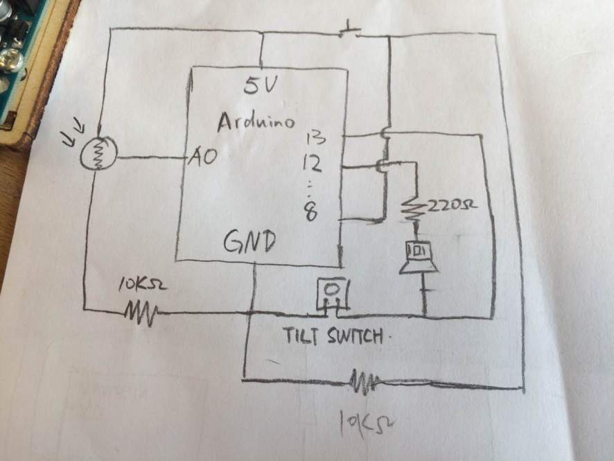
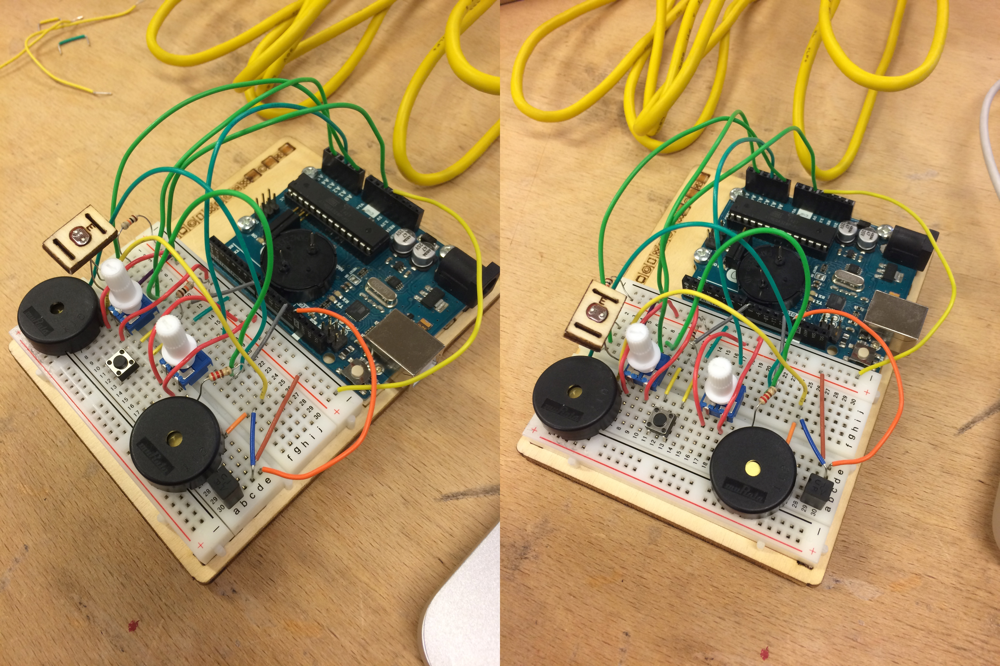

Time
Nov.2015 - Jan.2016
This Arduino Photosensitive Alarm plays music when it feels light( of course you can change the light sensor value to control trigger light degree), and it can play 2 different songs by put it vertical or horizontal, also can change speed and volume by using the rotated button, and finally you will got a short snooze by pressing the press switch.
Nov.2015 - Jan.2016
Paris, France
Idea generation
Hardware and circuit Design
Arduino coding
Due to I can hardly hear my alarm every morning and I do want to wake up early than before, maybe wake up by dawn. I’d like to make a Photosensitive Alarm. And this alarm should ring when the light shows. Also, normal alarm rings very boring so I will let it play some music I like to make me delightful in the morning. The song’s rhythm and melody are make by Arduino code.
Make the improvement of the circuit. The graph shows below:
Connect the circuit, then testing, the final photo sensitive alarm looks like the following:
